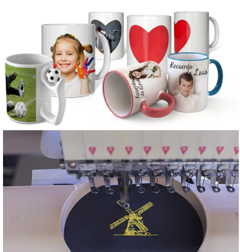

Servicios
Serigrafia Textil
Esta técnica es una de las más usadas de entre los tipos de estampados textiles, pues permite repetir el proceso de forma muy sencilla. Otra ventaja de aprender cómo hacer serigrafía es que, una vez que se consigue una primera impresión correcta, la estampa no pierde definición a lo largo de las aplicaciones, sin importar el número.
Adicionalmente, esta clase de estampado te ofrece las siguientes ventajas:
- No se daña con el lavado
- Es una técnica económica
- Tiene un efecto de largo tiempo
- Se puede usar hasta 6 colores
Sublimación textil
este estampado textil no es un proceso económico para hacer en casa, ya que necesitarás una máquina termoestampadora que aplique la presión y el calor necesario para que se genere la modificación química de la tela con la tinta. Las ventajas de este proceso de estampado de playeras son que el resultado es inalterable y, a diferencia de la serigrafía, a través de la sublimación textil, puedes aplicar diversos colores sobre la tela.
Tener en cuenta lo siguiente:
- Tiene una resultados increibles en fondos claros
- Funciona mejor en la tela poliester
- Es un poco más demoroso en telas de algodón
Vinil Textil
Dependiendo de la calidad del vinilo, esta es una técnica que puede tener acabados muy profesionales, pues presenta una gran durabilidad y resistencia al lavado.
Considera lo siguiente:
- El diseño debe ser sencillo
- Solo se puede utilzar un color
- Se puede aplicar en cualquier prendas
Sublimado en tazas
Dependiendo del diseño que desea el cliente ya que los diseños personalizados se requiere mucho mas tiempo por la situación del diseño.
Bordado
Somos los mejores en brindar servicios de bordado computarizado, con gran capacidad de producción, estándares de calidad, maquinaria de última tecnología y puntualidad en las entregas.
